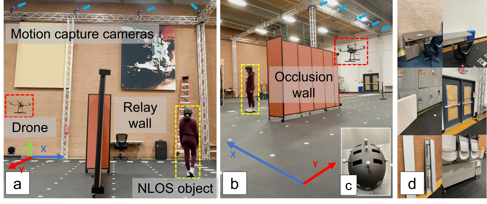
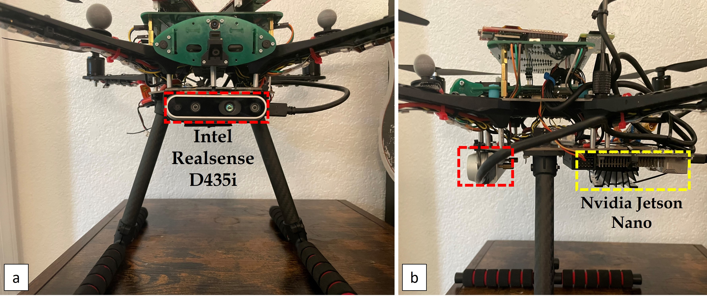

The effectiveness of the NLOS tracking system is validated using two types of datasets: synthetic and real-world. These datasets are crucial for training and testing the accuracy of the tracking algorithms under varied conditions.
Synthetic Dataset: The synthetic dataset is generated using advanced simulation techniques to mimic a variety of non-line-of-sight scenarios. These simulations provide controlled environments to test the robustness and accuracy of the NLOS tracking system, ensuring it can handle complex visual data and track movements accurately.
(a) Overhead view of a sample synthetic NLOS scene simulated using Blender, showing the
camera (lower left),
human character (NLOS object), and
sources of ambient lighting in the room. (b) Samples of the eight characters from the Mixamo library that were used for synthetic data generation. (c) Samples of three sets of relay walls with different materials that were used for synthetic data generation.
Real-World Dataset: Complementing the synthetic data, the real-world dataset consists of video recordings collected from indoor environments using the mobile robot. This dataset challenges the system with dynamic, unpredictable conditions that are typical in real-world scenarios, testing the system’s adaptability and performance.

(a) Real-world data collection setup: A drone captures
images of a relay wall while a person (NLOS object) is
hidden from view. The person’s ground-truth position is
obtained using motion capture cameras. (b) Side view of the
setup. (c) Helmet mounted with IR markers for ground-truth
data collection. (d) Samples of FOV regions in the dataset,
with different surface textures and types of objects present.

Customized drone equipped with Intel RealSense cameras (highlighted in red) for visual inertial odometry (VIO) during indoor flight. Raw data, including color camera images, stereo images, and IMU data, are extracted for VIO and camera pose estimation. The onboard Jetson Nano (highlighted in yellow) facilitates real-time processing.